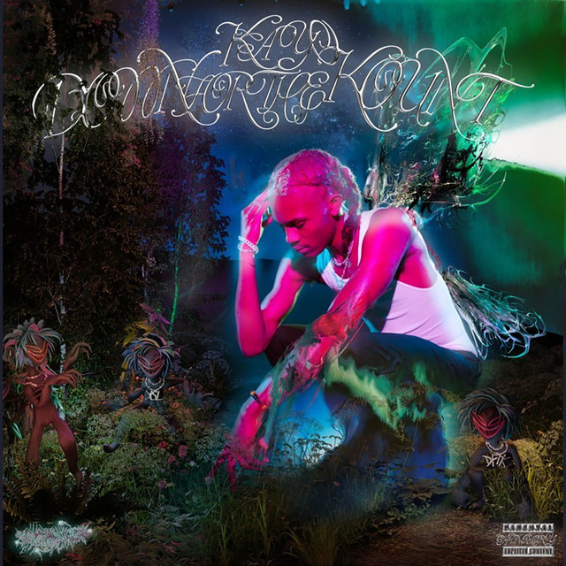

DFTK yung kayo

A+
yung kayo has always struck me as an anomaly within underground rap. the first time i heard his music was early 2020, when lil dre released ‘manifest destiny’, a debut thrasher part featuring ‘so much’ by yung kayo playing in the background. the slow, menacing guitar riff combined with the distorted 808s and thugger-like vocal inflections immediately caught my attention. yung kayo clearly had the elements that would form the basis of ‘rage’ in his music long before the trend quickly caught on post-wlr. the most surprising thing however, is that yung kayo was only 16 - just about a year older than me. ‘sweet16’, the 3 song ep it was from, also contained production from f1lthy and lukrative, names while already well established would also quickly become key to carti’s later sound.
one name i didn't recognise though was warpstr. warpstr turned out to be kayo’s middle school friend and would become his long-time collaborator across multiple projects, and was the producer behind ‘so much’. warpstr was clearly very talented - listen to any of the beats on ‘+ + +’ or ‘- - -’ and you’ll realise he can easily create a plethora of evil and sinister beats. simultaneously though, warpstr would venture into the land of electronic and hyerpop via PC Music’s umru creating ‘supercharge’, a song not only highlighting his diversity but also acting as a precursor to some of the sounds on DFTK.
ultimately, their relationship is what i think elevates DFTK above other rappers’ debuts. warpstr doesn’t stick to the usual sounds most underground rappers use; instead using an array of synths, vocal effects and drums clearly influenced by his other projects with people like umru. ‘save her’ features a pitched up sample of an obscure j-pop song (‘wonder2 - perfume”) repeating throughout the whole of it, it’s childlike lullaby contrasted by the aggressive 808s and kayo’s constant flow. ‘yeet’ contains a crescendoing and alien synth dominating the song, with yeat’s occasional distorted vocals accompanying it in the background. but perhaps the best example of them pushing boundaries is on the song ‘hear you’, with art-pop’s eartheater lending her vocals to create a grand and chaotic explosion of sound. it's a collaboration no one would’ve expected, yet the juxtaposition between her siren-like voice and kayo’s creates one of the most forward thinking songs in cloud rap in years.
this album is absolutely messy - every song is jammed to the brim with layers and sounds that take multiple listens to pick up on. whether all of them are necessary and add to the songs is up to debate, but at the end of the day it makes for one of the most fun projects i’ve heard in a long time. with yung kayo’s willingness to experiment and warpstr’s unique and exhilarating style of production, i have no doubt that as they refine their sound they will become an unstoppable duo.